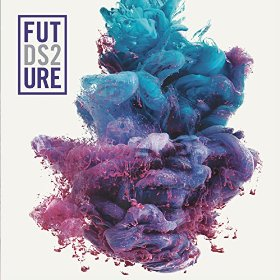

Carrer begining
Nayvadius DeMun Cash (né Wilburn; born November 20, 1983), known professionally as Future, is an American rapper and singer.
Known for his mumble-styled vocals and prolific output, Future is considered a pioneer of the use of auto-tuned melodies in modern trap music. Due to the sustained popularity of this musical style, he is commonly regarded as one of the most influential rappers of his generation.
 Born and raised in Atlanta, Georgia, Future signed a recording contract with Rocko's A1 Recordings and Epic Records in 2011, and released his first two studio albums — Pluto (2012) and Honest (2014) — to critical and commercial success.
Born and raised in Atlanta, Georgia, Future signed a recording contract with Rocko's A1 Recordings and Epic Records in 2011, and released his first two studio albums — Pluto (2012) and Honest (2014) — to critical and commercial success.
The albums contained the platinum-certified singles "Turn On the Lights", "Honest", "Move That Dope" (featuring Pharrell Williams and Pusha T), and "I Won" (featuring Kanye West). His subsequent projects have each peaked the US Billboard 200 and saw continued success upon release.
 His third and fourth albums, DS2 (2015) and Evol (2016) were supported by their respective lead singles "Where Ya At" (featuring Drake) and "Low Life" (featuring The Weeknd).
Future's eponymous fifth album and its successor Hndrxx (both 2017) made him the first artist to debut two chart-topping albums on the Billboard 200 in consecutive weeks—the former contained the international hits "Used to This" (featuring Drake) and "Mask Off.
Early life
Nayvadius DeMun Wilburn was born on November 20, 1983, in Atlanta, Georgia. He attended Columbia High School in Decatur. At age sixteen (c. 1999/2000), Future described getting shot in the hand and robbed, an event he regards as a major turning point in his life.
Future began his career under the name "Meathead" as a member of the Georgia-based musical collective Dungeon Family. He performed in a smaller hip hop group within the collective who went by the name "Da Connect", where he would later be nicknamed "The Future" by group member G-Rock. The group recorded one album, Rico Wade Presents: Da Connect which was slated for commercial release in 2003, but was ultimately shelved. Future had one solo record on the project titled "Belly of da Beast", which is considered to be his first song.
His first cousin, record producer and Dungeon Family member Rico Wade, encouraged him to sharpen his writing skills and pursue a career as a rapper, as recording would create temporary respite from street life. During this time, Future appeared in numerous Dungeon Family music videos, and received his first songwriting credit on the Organized Noize-produced single, "Blueberry Yum Yum" for rapper Ludacris in 2004. Future voices his praise of Wade's musical influence and instruction, calling him the "mastermind" behind his sound. He was thereafter discovered by fellow Atlanta rapper Rocko, who took Future under his wing as a solo artist on his A1 Recordings record label.